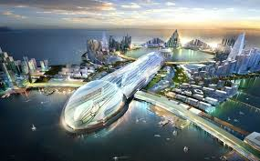
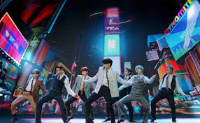
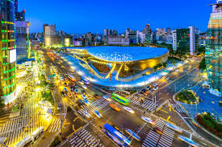
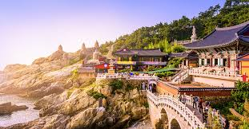

El país cuenta con una red de transportes tecnológicamente avanzados que consta de ferrocarriles
de alta velocidad, autopistas, rutas de autobuses, transbordadores y rutas aéreas que cruzan
todo el territorio. Korea Expressway Corporation es la compañía encargada de la operación,
mantenimiento y cobro de peajes en las autopistas. Korail proporciona el servicio ferroviario
a las principales ciudades del país. Las dos líneas que corren a Corea del Norte, la de
Gyeonggi y Donghae Bukbu, han vuelto a conectarse. El tren de alta velocidad coreano, KTX,
proporciona servicio de alta velocidad entre Gyeongju y Honam. Las principales ciudades
incluyendo a Seúl, Busán, Inchón, Daegu, Daejeon y Gwangju cuentan con sistemas de tren
subterráneo propio. La construcción del aeropuerto más grande de todo el país, el Aeropuerto
Internacional de Incheon, se completó en 2001. Seis años después, el aeropuerto recibía a
30 millones de pasajeros al año.137 Desde 2005, ha sido seleccionado como el "mejor
aeropuerto internacional" durante cuatro años consecutivos por el Consejo Internacional de
Aeropuertos. Otros aeropuertos internacionales incluyen el de Gimpo, Busán y Jeju.
También hay siete aeropuertos nacionales y un gran número de helipuertos.
|  | El arte coreano se encuentra fuertemente influenciado por el budismo y el confucianismo. Dentro de las artes plásticas más desarrolladas en Corea se encuentran la pintura, la caligrafía y la cerámica. La pintura coreana más antigua que aún se preserva es el Mural de Goguryeo, que data de la época de los Tres Reinos, aunque este arte alcanzó su máximo apogeo durante la dinastía de Goryeo. La mayoría de estas obras son de temática religiosa, y el paisajismo se desarrolló durante el esplendor de la dinastía de Joseon, siendo sus máximos representantes. La caligrafía se desarrolló al mismo tiempo que la pintura y otras artes gráficas, ya que antes de la invención del alfabeto coreano (Hangul), se utilizaron las formas de escritura chinas. |
 | |
| El cine ha cosechado varios éxitos a nivel internacional, aunque no goza de tanta popularidad como sus homónimos de India y Japón. La primera película producida totalmente en el país fue La venganza honrada dirigida por Kim Do-san en 1919.204 Después de esta se filmaron varias películas que tuvieron un éxito relativo en el país, pero el verdadero desarrollo de la industria cinematográfica coreana ocurrió después de la Guerra de Corea. |
 |
La arquitectura de la Corea premoderna puede dividirse en dos estilos principales: aquella que se utiliza en las estructuras de los palacios y templos y la utilizada en las casas de la gente común, la cual presenta variaciones locales. Los arquitectos antiguos adoptaron un sistema de soporte que se caracteriza por techos de paja y pisos sencillos llamados ondol. Las personas de la clase alta construían grandes casas con techos de tejas. | |
| A partir de la división de la península, la música de Corea del Sur se divide básicamente en dos: la música tradicional y folclórica y la música moderna. La música tradicional coreana, llamada Hanguk Eumak se desarrolló de diferentes formas a lo largo de los siglos, ya que cumplía un papel importante en ceremonias y eventos. |
|||